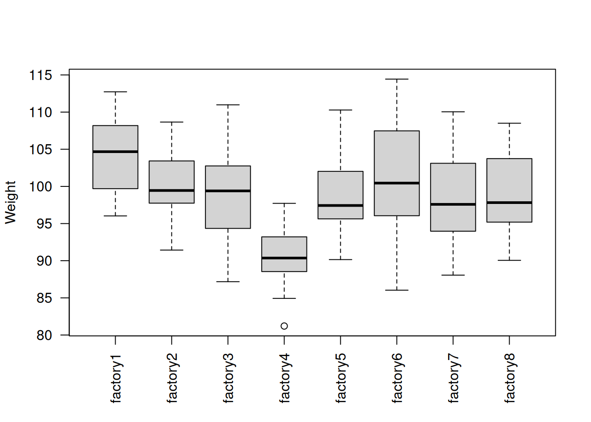
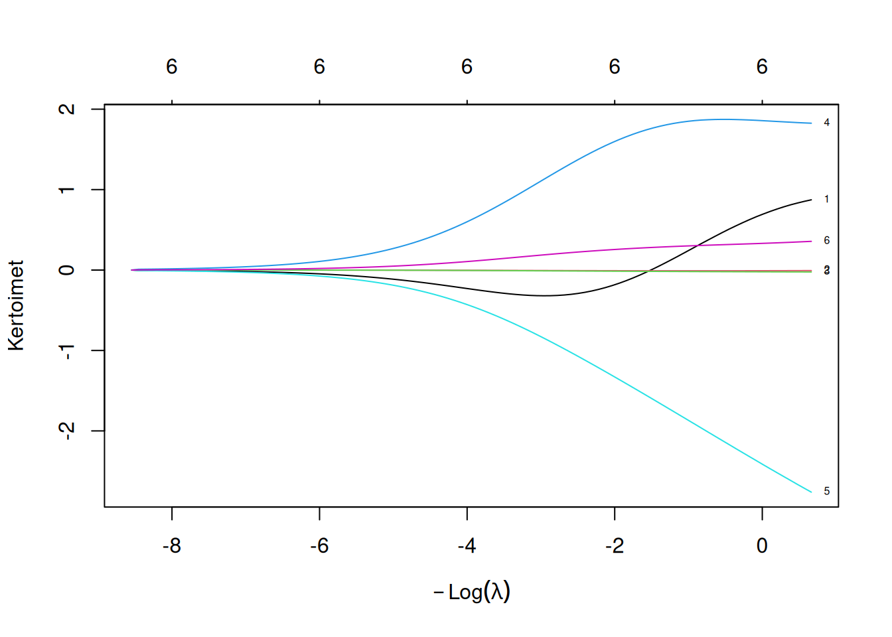

Luku 9 Moniulotteisuuden haasteet tilastollisessa testauksessa ja regressiossa
Yhä moniulotteisempia havaintoaineistoja esiintyy monilla tilastotieteen ja kauppatieteiden aloilla. Intuitiivisesti voidaan ajatella, että mitä enemmän dataa on sitä parempi. Kuitenkin monen muuttujan tilastollisiin analyyseihin liittyy omat sudenkuoppansa.
Esimerkiksi joissain tilanteissa haluamme suorittaa useamman tilastollisen testin samalle havaintoaineistolle, mitä kutsutaan monitestaukseksi. Monitestaukseen liittyviä haasteita käsitellään luvussa 9.1. Toisaalta usein lineaarisessa regressiossa, jos dataa on useista selittäjistä26, niin vain oleelliset selittäjät halutaan valita lopulliseen malliin. Muuttujanvalintastrategioita esitellään luvuissa 9.2 ja 9.3.
9.1 Monitestaus
Esimerkeissä 4.8 ja 5.7 vertailimme eri tehtaiden tuottamien suklaalevyjen painoja ANOVA:lla ja Kruskal–Wallis testillä27. Molemmissa esimerkeissä päädyimme siihen johtopäätökseen, että ainakin kahdessa eri tehtaassa suklaalevyjen painot eroavat tilastollisesti merkitsevästi. Seuraava askel onkin selvittää, missä tehtaissa suklaalevyjen painot eroavat tilastollisesti merkitsevästi toisistaan. Tämä toteutetaan usein tehtaiden parittaisella vertailulla. Riippuen satunnaishavaintoihin liittyvistä oletuksista, tehtaita voidaan vertailla parametrisilla (esimerkiksi kahden otoksen t-testillä) tai epäparametrisilla (esimerkiksi sijasummatestillä) testeillä. Vaikka tässä luvussa käytämme epäparametrisia testejä populaatioiden vertailuun, niin luvussa käydyt periaatteet pätevät myös parametrisiin testeihin.
Alla näytetään lähestymistapa tehtaiden parittaiseen vertailuun, joka saattaa aluksi tuntua luonnolliselta. Kuitenkin esimerkin 9.1 kuvailema lähestymistapa on ongelmallinen.
Esimerkki 9.1 (Varoittava esimerkki) Vilin makeistehdas oy on laajentanut toimintaansa yhteensä kahdeksaan tehtaaseen. Johtoporras on asettanut laatukriteeriksi, että suklaalevyjen painojakaumat pitäisi olla samoja kaikissa tehtaissa. Jokaisesta tehtaasta on \(n = 20\) kokoinen otos suklaalevyjä.
## # A tibble: 20 × 8
## factory1 factory2 factory3 factory4 factory5 factory6 factory7 factory8
## <dbl> <dbl> <dbl> <dbl> <dbl> <dbl> <dbl> <dbl>
## 1 96.0 92.4 97.4 81.2 95.9 110. 96.7 98.1
## 2 110. 98.8 102. 88.5 107. 104. 97.0 107.
## 3 113. 101. 100. 93.6 102. 99.7 90.3 95.4
## 4 109. 98.3 99.6 93.7 96.9 86.0 99.6 108.
## 5 99.8 104. 92.2 97.7 96.2 101. 110. 105.
## 6 107. 95.4 87.2 92.8 110. 98.3 94.2 102.
## 7 99.6 109. 94.6 96.5 98.7 114. 97.5 96.0
## 8 106. 105. 104. 89.9 94.2 97.0 104. 97.0
## 9 97.7 97.6 103. 87.5 100. 103. 97.7 109.
## 10 106. 91.4 100.0 89.6 90.2 95.1 105. 94.9
## 11 97.7 91.5 88.8 86.8 105. 108. 102. 107.
## 12 102. 98.0 111. 92.2 93.7 87.5 88.1 101.
## 13 104. 102. 94.1 90.9 93.8 107. 93.7 102.
## 14 98.2 104. 91.3 96.4 107. 100.0 99.1 97.6
## 15 103. 103. 99.9 91.7 96.3 108. 104. 95.8
## 16 105. 97.9 103. 88.6 97.9 111. 105. 92.0
## 17 111. 102. 95.1 84.9 101. 94.0 95.1 99.7
## 18 110. 98.4 98.1 92.2 96.1 101. 92.6 90.0
## 19 101. 108. 107. 89.7 102. 94.7 101. 93.9
## 20 107. 100. 99.1 88.7 95.4 100. 91.4 90.5Aluksi muokataan havaintoaineistoa niin, että toinen sarake antaa havainnot ja ensimmäinen sarake antaa tehtaan, josta havainto tulee.
library(tidyr)
choco_mod <- choco_big %>%
pivot_longer(everything(), names_to = "factory", values_to = "weight") %>%
mutate(factory = factor(factory))
choco_mod## # A tibble: 160 × 2
## factory weight
## <fct> <dbl>
## 1 factory1 96.0
## 2 factory2 92.4
## 3 factory3 97.4
## 4 factory4 81.2
## 5 factory5 95.9
## 6 factory6 110.
## 7 factory7 96.7
## 8 factory8 98.1
## 9 factory1 110.
## 10 factory2 98.8
## # ℹ 150 more rowsKuvan 9.1 perusteella ainakin tehtaan 4 jakauman sijainti (tässä tapauksessa mediaani) näyttää kaikista poikkeavimmilta verrattuna muihin tehtaisiin. Visuaalisen tarkastelun perusteella siis ainakin yhden tehtaan suklaalevyjen painojakauma eroaa muista tehtaista.
# las argument changes the orientation of x-axis labels
boxplot(weight ~ factory, data = choco_mod, xlab = NA, ylab = "Weight",
las = 2)
Kuva 9.1: Tehtaiden otoksia vastaavat laatikkokuviot.
Suoritetaan Kruskal–Wallis testi. Merkitsevyystasolla \(\alpha = 0.05\) nollahypoteesi siitä, että suklaalevyjen painojen jakaumat \(F_j\) tehtaissa \(j\in\{1, \ldots, 8\}\) ovat erilaisia \[\begin{equation*} H_0: F_1 = F_2 = \cdots = F_8 \end{equation*}\] hylätään.
##
## Kruskal-Wallis rank sum test
##
## data: weight by factory
## Kruskal-Wallis chi-squared = 46.192, df = 7, p-value = 8.02e-08Nyt haluamme selvittää, missä tehtaissa suklaalevyjen painojakaumat ovat erilaisia. Muista, että sijasummatestillä voimme testata seuraavaa nollahypoteesia \(H_0\) vastahypoteesia \(H_1\) vastaan \[\begin{align*} &H_0: F_j = F_k, \\ &H_1: F_j \neq F_k, \end{align*}\] tehtaille \(j,k\in\{1, \ldots, 8\}\), \(j\neq k\). Esimerkiksi alla olevassa koodinpätkässä vertaamme kolmatta ja kuudetta tehdasta.
wilcox.test(choco_big$factory3, choco_big$factory6, paired = FALSE,
alternative = "two.sided", exact = TRUE)##
## Wilcoxon rank sum exact test
##
## data: choco_big$factory3 and choco_big$factory6
## W = 153, p-value = 0.211
## alternative hypothesis: true location shift is not equal to 0Onneksi sijasummatestejä ei tarvitse suorittaa mekaanisesti kaikille tehdaspariyhdistelmille, vaan tätä varten on oma R funktio pairwise.wilcox.test().
##
## Pairwise comparisons using Wilcoxon rank sum exact test
##
## data: choco_mod$weight and choco_mod$factory
##
## factory1 factory2 factory3 factory4 factory5 factory6 factory7
## factory2 0.0195 - - - - - -
## factory3 0.0051 0.4291 - - - - -
## factory4 1.7e-10 2.6e-07 3.9e-05 - - - -
## factory5 0.0035 0.4291 0.9467 1.1e-06 - - -
## factory6 0.2012 0.6205 0.2110 5.8e-06 0.2423 - -
## factory7 0.0018 0.3013 0.8620 2.9e-05 0.7788 0.1918 -
## factory8 0.0080 0.5468 0.8410 6.9e-06 0.9254 0.3408 0.6783
##
## P value adjustment method: noneKäyttämällä merkitsevyystasoa \(\alpha = 0.05\) huomaamme, että
tehtaan \(4\) suklaalevyjen painojakauma eroaa merkittävästi kaikista tehtaista ja
tehtaan \(1\) painojakaumat eroaa merkittävästi tehtaista \(2\), \(3\), \(4\), \(5\), \(7\) ja \(8\).
Yllä olevan esimerkin ongelma liittyy siihen, että suorittamme useamman tilastollisen testin samanaikaisesti funktiolla pairwise.wilcox.test() (yhteensä \(28\) testiä). Mitä useamman testin teemme samanaikaisesti sitä todennäköisempää on, että nollahypoteesi hylätään ainakin yhden testin kohdalla datan satunnaisvaihtelun vuoksi. Tätä ongelmaa kutsutaan tilastotieteessä monitestausongelmaksi (eng: multiple testing problem), jota kuvaamme alla tarkemmin.
Muista Tilastotieteen perusteista, että tilastollisessa testauksessa on kaksi mahdollista tapaa tehdä vääränlainen johtopäätös eli testausvirhe. Tyypin 1 virhe eli hylkäysvirhe ja tyypin 2 virhe eli hyväksymisvirhe ollaan kuvailtu taulukossa 9.1.
Voimme sattumalta hylätä nollahypoteesin, vaikka nollahypoteesi kuvaisi totuutta (Tyypin 1 virhe, väärä positiivinen)
Voimme sattumalta olla hylkäämättä nollahypoteesia, vaikka nollahypoteesi ei olisi totta (Tyypin 2 virhe, väärä negatiivinen).
| Päätös | \(H_0\) on totta | \(H_1\) on totta |
|---|---|---|
| \(H_0\) hylätään |
Hylkäysvirhe (Tyypin 1 virhe) |
Oikea päätös |
| \(H_0\) ei hylätä | Oikea päätös |
Hyväksymisvirhe (Tyypin 2 virhe) |
Muista myös, että hylkäysvirheen todennäköisyyttä voidaan kontrolloida merkitsevyystason \(\alpha\) avulla.
Fakta 9.1 (Yläraja hylkäysvirheelle) Merkitsevyystaso \(\alpha\) antaa ylärajan hylkäysvirheelle eli \[\begin{equation*} \mathbb{P}(H_0 \ \text{hylätään} | H_0) \leq \alpha. \end{equation*}\]
Kuitenkin esimerkin 9.1 tyyppisessä monitestauksessa haluamme kontrolloida todennäköisyyttä, jolla saadaan ainakin yksi hylkäysvirhe. Tälle todennäköisyydelle annetaan yläraja alla olevassa faktassa, joka todistetaan viikon 11 tehtävässä 1.
Fakta 9.2 (Yläraja perhekohtaiselle virhetodennäköisyydelle) Suoritetaan \(m\) tilastollista testiä käyttäen merkitsevyystasoa \(\alpha/m\). Merkitään tilastollisen testin \(j\in\{1, \ldots, m\}\) nollahypoteesia notaatiolla \(H_0^{(j)}\). Samoin merkitään tapahtumaa, että tilastollisessa testissä \(j\) tehdään hylkäysvirhe notaatiolla \(A_j = \left\{H_0^{(j)} \ \text{hylätään} | H_0^{(j)}\right\}\). Tällöin \[\begin{equation*} \mathbb{P}\left(\bigcup_{j=1}^m A_j\right) \leq \alpha. \end{equation*}\] Todennäköisyyttä \(\mathbb{P}\left(\bigcup_{i=1}^m A_j\right)\) kutsutaan perhekohtaiseksi virhetodennäköisyydeksi (eng: family-wise error rate).
Eli jos teemme \(m\) tilastollista testiä samanaikaisesti merkitsevyystasolla \(\alpha/m\), niin yläraja perhekohtaiselle virhetodennäköisyydelle (todennäköisyys saada ainakin yksi hylkäysvirhe) on \(\alpha\). Tästä johtuen tuntuisi loogiselta, että esimerkin 9.1 funktiossa pairwise.wilcox.test() meidän kannattaisi käyttää merkitsevyystasona28 \(0.05 / 28 \approx 0.001786\) alkuperäisen \(0.05\) sijaan, jotta yläraja perhekohtaiselle virhetodennäköisyydelle on \(0.05\). Tämä on yhtäpitävää sen kanssa, että vertaamme korjattuja p-arvoja \(m\cdot \text{p-arvo}\) alkuperäiseen merkitsevyystasoon \(\alpha = 0.05\), koska
\[\begin{equation*}
\text{$H_0$ hylätään} \iff \text{p-arvo} < \frac{\alpha}{m}
\iff m\cdot \text{p-arvo} < \alpha.
\end{equation*}\]
Eli monitestausongelmassa perhekohtainen virhetodennäköisyys on paljon tärkeämpi suure kuin todennäköisyys hylkäysvirheelle yhdessä testissä. Tämän vuoksi p-arvoja usein korjataan siten, että perhekohtainen virhetodennäköisyys saadaan oikealla tasolle (esimerkiksi \(0.01\) tai \(0.05\)). Eräs yksinkertaisimmista tavoista korjata p-arvoja on Bonferronin korjaus29, jossa p-arvot kerrotaan tilastollisten testien määrällä \(m\). R funktio pairwise.wilcox.test() tuottaa Bonferroni korjatut p-arvot, kun asetetaan p.adjust.method = "bonferroni" funktion sisällä (Viikko 11, tehtävä 1).
9.2 Muuttujanvalinta lineaarisessa regressiossa
Oletetaan, että saatavilla on \(n\) kappaletta \((p + 1)\)-ulotteisia riippumattomia havaintoja \[\begin{equation*} \left\{(y_1, x_{11}, x_{12}, \ldots, x_{1p}), \ldots, (y_n, x_{n1}, x_{n2}, \ldots, x_{np})\right\}, \end{equation*}\] jossa ensimmäinen komponentti antaa selitettävän muuttujan havainnot ja muut komponentit antavat mahdollisten \(p\) selittävien muuttujien havainnot. Usein halutaan sisällyttää vain oleelliset selittäjät lopulliseen lineaariseen regressiomalliin. Tällöin kysymys kuuluukin, mitkä selittäjät tulee sisällyttää malliin.
Jos sisällytämme liian vähän selittäjiä, niin mallin sovite on huono (alhainen selitysaste \(R^2\) tai muokattu selitysaste \(R_{adj}^2\)) ja myös ennustuksien laatu kärsii.
Jos sisällytämme liikaa selittäjiä, niin vaarana on liikasovittaminen ja multikollineaarisuus.
Muuttujanvalintaa voi soveltaa esimerkiksi alla kuvaillussa tilanteessa.
Esimerkki 9.2 (Mallien määrä) Havaintoaineisto mtcars sisältää dataa liittyen autojen ominaisuuksiin (yhteensä \(7\) muuttujaa). Havaintoja (eli autoja) on yhteensä \(32\) kappaletta. Haluamme selittää polttoaineen kulutusta mpg muilla havaintoaineiston muuttujilla. Muuttujaa mpg mitataan yksiköissä maili\(/\)gallona. Eli suuri mpg arvo viittaa pieneen polttoaineen kulutukseen ja pieni mpg arvo viittaa suureen polttoaineen kulutukseen. Tarkemman kuvailun kaikista muuttujista näet komennolla ?mtcars.
## # A tibble: 32 × 7
## mpg cyl disp hp drat wt qsec
## <dbl> <fct> <dbl> <int> <dbl> <dbl> <dbl>
## 1 21 6 160 110 3.9 2.62 16.5
## 2 21 6 160 110 3.9 2.88 17.0
## 3 22.8 4 108 93 3.85 2.32 18.6
## 4 21.4 6 258 110 3.08 3.22 19.4
## 5 18.7 8 360 175 3.15 3.44 17.0
## 6 18.1 6 225 105 2.76 3.46 20.2
## 7 14.3 8 360 245 3.21 3.57 15.8
## 8 24.4 4 147. 62 3.69 3.19 20
## 9 22.8 4 141. 95 3.92 3.15 22.9
## 10 19.2 6 168. 123 3.92 3.44 18.3
## # ℹ 22 more rowsNyt esimerkiksi mahdollisia kahden selittäjän lineaarisia regressiomalleja \[\begin{align*} &\texttt{mpg}_i = \beta_0 + \beta_1 \texttt{cyl}_i + \beta_2\texttt{disp}_i + \varepsilon_i, &\texttt{mpg}_i = \beta_0 + \beta_1 \texttt{cyl}_i + \beta_3 \texttt{hp}_i + \varepsilon_i, \\ &\texttt{mpg}_i = \beta_0 + \beta_1 \texttt{cyl}_i + \beta_4 \texttt{drat}_i + \varepsilon_i, &\texttt{mpg}_i = \beta_0 + \beta_1 \texttt{cyl}_i + \beta_5 \texttt{wt}_i + \varepsilon_i, &\quad\text{jne.} \end{align*}\] on \(\binom{6}{2} = 15\) kappaletta. Kolmen selittäjän malleja on \(\binom{6}{3} = 20\) kappaletta. Kokonaisuudessaan mahdollisia malleja on \(\sum_{i=0}^{6} \binom{6}{i} = 2^{6} = 64\) kappaletta30, kun myös malli ilman selittäjiä \(\texttt{mpg}_i = \beta_0 + \varepsilon_i\) on vaihtoehto.
Yleensä ideana on valita selittäjät niin, että kaavan (3.11) estimoitu virhetermien \(\varepsilon_i\) varianssi \(s^2\) on mahdollisimman pieni mutta toisaalta selittäjien lukumäärä \(d\in\{1, \ldots, p\}\) on myös mahdollisimman pieni. Matemaattisesti tämä tarkoittaa yleensä jonkun järkevän funktion \(f = f(s^2, d)\) minimoimista selittäjien suhteen. Vaihtoehtoja funktiolla \(f\) on useita. Yleisiä valintoja ovat esimerkiksi
kaavan (3.8) muokattu selitysaste \(f(s^2, d) = R_{adj}^2\) tai
niin kutsuttu Akaiken informaatiokriteeri (eng: Akaike information criterion, AIC) \(f(s^2, d) = \ln\left(s^2\right) + \frac{2d}{n}\).
Nyt periaatteessa valitun funktion \(f\) arvo voitaisiin laskea kaikille mahdollisille malleille ja sitten valitaan se malli, jolle \(f(s^2, d)\) on pienin. Yleensä kuitenkin malleja on niin paljon, että näin ei tehdä. Tämän sijaan käytännön ongelmissa käytetään jotain strategiaa31, jolla päästään usein lähelle optimaalista mallia. Kolme erilaista muuttujanvalintastrategiaa perustuen Akaiken informaatiokriteeriin ollaan implementoitu R funktiossa step(). Huomaa, että minimoitavan funktion \(f\) valinnan lisäksi myös muuttujanvalintastrategia vaikuttaa siihen, mihin malliin lopulta päädytään.
Alla on esimerkki muuttujanvalinnasta R funktion step() avulla.
Esimerkki 9.3 (Muuttujanvalinta) Nyt haluamme suorittaa muuttujanvalinnan esimerkin 9.2 tilanteessa. Minimoitavana funktiona käytämme Akaiken informaatiokriteeriä (AIC). Käytämme seuraavaa valintastrategiaa.
Laskemme sovitettua mallia vastaavan AIC:n.
Lisäämme/poistamme selittäjän niin, että uuden sovitetun mallin AIC pienenee mahdollisimman paljon.
Toistamme askeleet 1 ja 2 kunnes minkään selittäjän lisäys/poisto ei vähennä sovitetun mallin AIC:tä.
Valintastrategia määritetään argumentin direction avulla. Lisäksi meidän täytyy asettaa algoritmille joku aloituspiste eli malli, josta aloitamme. Tässä tapauksessa aloituspisteeksi asetamme mallin ilman selittäjiä \(\texttt{mpg}_i = \beta_0 + \varepsilon_i\) ensimmäisessä argumentissa. Funktion step() argumentissä scope täytyy myös määritellä mallit joita algoritmi harkitsee.
# Model with only the intercept
empty_model <- lm(mpg ~ 1, data = mtcars)
# Model with all the possible explatonary variables
full_model <- lm(mpg ~ ., data = mtcars)
# Perform stepwise selection starting from the empty model
model_step <- step(empty_model,
scope = list(lower = empty_model, upper = full_model),
direction = "both")## Start: AIC=115.94
## mpg ~ 1
##
## Df Sum of Sq RSS AIC
## + wt 1 847.73 278.32 73.217
## + disp 1 808.89 317.16 77.397
## + cyl 2 824.78 301.26 77.752
## + hp 1 678.37 447.67 88.427
## + drat 1 522.48 603.57 97.988
## + qsec 1 197.39 928.66 111.776
## <none> 1126.05 115.943
##
## Step: AIC=73.22
## mpg ~ wt
##
## Df Sum of Sq RSS AIC
## + cyl 2 95.26 183.06 63.810
## + hp 1 83.27 195.05 63.840
## + qsec 1 82.86 195.46 63.908
## + disp 1 31.64 246.68 71.356
## <none> 278.32 73.217
## + drat 1 9.08 269.24 74.156
## - wt 1 847.73 1126.05 115.943
##
## Step: AIC=63.81
## mpg ~ wt + cyl
##
## Df Sum of Sq RSS AIC
## + hp 1 22.281 160.78 61.657
## <none> 183.06 63.810
## + qsec 1 10.949 172.11 63.837
## + disp 1 0.110 182.95 65.791
## + drat 1 0.073 182.99 65.798
## - cyl 2 95.263 278.32 73.217
## - wt 1 118.204 301.26 77.752
##
## Step: AIC=61.66
## mpg ~ wt + cyl + hp
##
## Df Sum of Sq RSS AIC
## <none> 160.78 61.657
## + drat 1 2.438 158.34 63.168
## + disp 1 0.651 160.13 63.527
## + qsec 1 0.229 160.55 63.611
## - hp 1 22.281 183.06 63.810
## - cyl 2 34.270 195.05 63.840
## - wt 1 116.390 277.17 77.084Yllä oleva tuloste näyttää muuttujanvalinnan kaikki vaiheet. Esimerkiksi ensimmäisessä vaiheessa muuttujan wt lisääminen pienentää AIC:tä eniten. Tässä tapauksessa algoritmi lisää yhteensä kolme selittäjää (wt, cyl ja hp) ja huomaa, että tämän jälkeen minkään uuden selittäjän lisääminen tai vanhan selittäjän poistaminen ei pienennä AIC:ta. Lopullinen sovitettu malli ollaan tallennettu muuttujaan model_step. Mallin analysoimista voitaisiin jatkaa nyt normaalisti (diagnostiikka, mallin sovitteen hyvyys, merkitsevyys jne).
##
## Call:
## lm(formula = mpg ~ wt + cyl + hp, data = mtcars)
##
## Residuals:
## Min 1Q Median 3Q Max
## -4.2612 -1.0320 -0.3210 0.9281 5.3947
##
## Coefficients:
## Estimate Std. Error t value Pr(>|t|)
## (Intercept) 32.48697 2.81147 11.555 5.86e-12 ***
## wt -3.18140 0.71960 -4.421 0.000144 ***
## cyl4 3.35902 1.40167 2.396 0.023747 *
## cyl8 0.17314 1.65392 0.105 0.917400
## hp -0.02312 0.01195 -1.934 0.063613 .
## ---
## Signif. codes: 0 '***' 0.001 '**' 0.01 '*' 0.05 '.' 0.1 ' ' 1
##
## Residual standard error: 2.44 on 27 degrees of freedom
## Multiple R-squared: 0.8572, Adjusted R-squared: 0.8361
## F-statistic: 40.53 on 4 and 27 DF, p-value: 4.869e-119.3 Harjanneregressio
Harjanneregression voidaan nähdä olevan vaihtoehto perinteiselle muuttujanvalinnalle. Muuttujanvalinnassa tietty muuttuja joko sisällytetään malliin tai ei. Toisaalta harjanneregressiossa kaikki alkuperäiset selittäjät pidetään mallissa mutta suuria kulmakertoimia kutistetaan.
Muista että pienimmän neliösumman menetelmällä lasketut estimaatit \(\hat\beta_j\) minimoivat neliösummaa \[\begin{equation*} \sum_{i = 1}^n \left(y_i - \beta_0 - \sum_{j = 1}^d \beta_j x_{ij}\right)^2. \end{equation*}\] Matemaattisesti harjanneregression kertoimien kutistaminen tarkoittaa sitä, että estimaatit \(\hat\beta_j\) minimoivat sakotettua neliösummaa \[\begin{equation} \tag{9.1} \underbrace{\sum_{i = 1}^n \left(y_i - \beta_0 - \sum_{j = 1}^d \beta_j x_{ij}\right)^2}_{\text{neliösumma}} + \underbrace{\lambda \sum_{j=1}^d \beta_j^2}_{\text{sakkotermi}}, \end{equation}\] jossa \(\lambda > 0\). Parametri \(\lambda\) määrittää, kuinka paljon kertoimia \(\beta_j\) sakotetaan. Mitä suurempi \(\lambda\) sitä lähempänä kertoimien estimaatit ovat lähempänä nollaa. Toisaalta kun \(\lambda = 0\), niin harjanneregression kertoimien estimaatit vastaavat pienimmän neliösumman estimaatteja. Huomaa myös, että sakkotermissä \(\lambda \sum_{j=1}^d \beta_j^2\) ei oteta termiä \(\beta_0\) mukaan – ainoastaan kulmakertoimia sakotetaan.
Huomautus 9.1 (Mitä hyötyä sakkotermistä on?)
Kun selittäjiä on todella paljon, niin lineaarinen malli on mahdollisesti epävakaa esimerkiksi vahvan multikollineaarisuuden vuoksi (selittäjät korreloituneita). Kertoimien kutistaminen on tapa lievittää multikollineaarisuudesta aiheutuvia ongelmia.
Jos jotkut selittäjät ovat täydellisesti korreloituneita, niin tavallinen pienimmän neliösumman menetelmä ei toimi mutta harjanneregressio toimii.
Harjanneregression avulla saadaan sisällytettyä kaikki potentiaaliset selittäjät malliin ilman liikasovittamista.
Tyypillisesti harjanneregressio vähentää estimaattoreihin \(\hat\beta_j\) liittyvää epävarmuutta (varianssia).
- Huom! Hinta varianssin pienentämisestä on se, että harjanneregressioestimaattorit \(\hat\beta_j\) ovat harhaisia. Perinteiset pienimmän neliösumman estimaattorit kertoimille \(\beta_j\) ovat harhattomia.
Yleensä ennen harjanneregression sovittamista dataa muokataan hieman. Ensimmäiseksi selittäjät standardisoidaan siten, että jokaisen selittäjän keskiarvo on nolla ja otoskeskiarvo on yksi. Tällöin selittäjien skaala ei vaikuta sakottamiseen, vaan kaikkia selittäjiä sakotetaan “tasapuolisesti”. Toiseksi selitettävä muuttuja yleensä keskitetään siten, että sen otoskeskiarvo on nolla, jolloin \(\hat\beta_0 = 0\) eli datan siivoamisen jälkeen vakiotermista ei tarvitse välittää.
Merkitään standardisoituja selittäjien havaintoja notaatiolla \[\begin{equation*} \boldsymbol X = \begin{pmatrix} \tilde x_{11} & \tilde x_{12} & \cdots & \tilde x_{1d} \\ \tilde x_{21} & \tilde x_{22} & \cdots & \tilde x_{2d} \\ \vdots & \vdots & \ddots & \vdots \\ \tilde x_{n1} & \tilde x_{n2} & \cdots & \tilde x_{nd} \end{pmatrix} \in\mathbb{R}^{n\times d}, \end{equation*}\] keskitettyjä selitettävän muuttujan havaintoja notaatiolla \[\begin{equation*} \boldsymbol y = (\tilde y_1, \tilde y_2, \cdots, \tilde y_d)^T \in\mathbb{R}^d \end{equation*}\] ja kertoimia notaatiolla \[\begin{equation*} \boldsymbol\beta = (\beta_1, \beta_2, \cdots, \beta_d)^T \in\mathbb{R}^d. \end{equation*}\] Nyt yllä määriteltyjen notaatioiden avulla kaavan (9.1) sakotettu neliösumma (ilman vakiotermiä \(\beta_0\)) voidaan kirjoittaa matriisimuodossa vektorinormin (10.1) avulla \[\begin{equation*} \|\boldsymbol y - \boldsymbol X \boldsymbol \beta\|^2 + \lambda\|\boldsymbol\beta\|^2. \end{equation*}\] Yllä olevasta kaavasta nähdään vielä selkeämmin, että sakkotermissä sakotetaan kerrroinvektorin \(\boldsymbol\beta\) suuruudesta \(\|\boldsymbol\beta\|\). Nyt minimoimalla sakotettua neliösummaa saadaan estimaattori kerroinvektorille, \[\begin{equation} \tag{9.2} \hat{\boldsymbol\beta} = \left(\boldsymbol X^T \boldsymbol X + \lambda \boldsymbol I\right)^{-1}\boldsymbol X^T\boldsymbol y, \end{equation}\] jossa \(\boldsymbol I\) on \((d\times d)\)-ulotteinen identiteettimatriisi. Verrattaessa harjanneregressioestimaattoria (9.2) pienimmän neliösumman estimaattoriin (3.7) huomataan, että ainoa ero on termi \(\lambda \boldsymbol I\).
Huomautus 9.2 (Termin \(\lambda \boldsymbol I\) vaikutus.) Muista, että pienimmän neliösumman estimaattori \(\hat{\boldsymbol\beta}_{PNS} = \left(\boldsymbol X^T \boldsymbol X\right)^{-1}\boldsymbol X^T\boldsymbol y\) ei ole hyvin määritelty, jos jotkut selittäjät ovat täysin korreloituneita keskenään. Termin \(\lambda \boldsymbol I\) lisääminen matriisiin \(\boldsymbol X^T \boldsymbol X\) aiheuttaa sen, että \(\hat{\boldsymbol\beta}_{Harjanne} = \left(\boldsymbol X^T \boldsymbol X + \lambda \boldsymbol I\right)^{-1}\boldsymbol X^T\boldsymbol y\) on aina hyvin määritelty, vaikka jotkut selittäjät olisivatkin täysin korreloituneita32.
R:ssä harjanneregressiomallin voi sovittaa paketin glmnet() funktiolla glmnet() (paketin ja funktion nimet ovat samat). Alla on esimerkki funktion glmnet() käytöstä.
Esimerkki 9.4 (Harjanneregressio) Funktio glmnet() toimii hieman eri tavalla kuin lm(). Koko dokumentaation näet komennolla ?glmnet. Esimerkiksi ensimmäinen argumentti x on matriisi selittäjien havainnoista ja toinen argumentti y on vektori selitettävän muuttujan havainnoista. Funktio glmnet() voi käyttää muunlaisiakin sakkoja kuin harjanneregression sakko \(\lambda\|\boldsymbol\beta\|^2\). Harjanneregression sakkoa käytetään asettamalla alpha = 0. Lisäksi oletuksena harjanneregressio sovitetaan useamman parametrin \(\lambda\) arvolla.
Alla sovitetaan harjanneregressio useammalla parametrin \(\lambda\) arvolla, kun esimerkin 9.2 havaintoaineiston mtcars muuttujaa mpg selitetään muilla havaintoaineiston muuttujilla.
library(glmnet)
y <- mtcars$mpg
x <- dplyr::select(mtcars, -mpg)
cars_ridge <- glmnet::glmnet(x, y, alpha = 0)Seuraavaksi voimme piirtää eräänlaisen “oletuskuvan” liittyen muuttujaan cars_ridge funktiolla plot(). Kuvan 9.2 alemmalla \(x\)-akselilla parametrin \(\lambda\) arvo pienenee vasemmalta oikealle. Kertoimien estimaattien arvot näkyvät \(y\)-akselilla. Eli vasemmalla sakottaminen on ankaraa ja kaikkien kertoimien estimaatit ovat lähellä nollaa. Mentäessä oikealle estimaattien arvot lähenevät pienimmän neliösumman estimaatteja. Huomaa, että \(x\)-akselin \(\lambda\) arvoille ollaan tehty \(\log\)-muunnos kuvaajan lukemisen helpottamiseksi. Argumentti label = TRUE merkitsee selittäjiä vastaavat käyrät muuttujan x sarakkeiden järjestyksen mukaan. Eli 1 = cyl, 2 = disp, …, 6 = qsec. Ylemmän \(x\)-akselin luvuilla \(6\) ei ole mitään tärkeää merkitystä tässä tapauksessa. Dokumentaation luokan glmnet olion kuvaajan piirtämiseen löydät komennolla ?plot.glmnet.

Kuva 9.2: Harjanneregression kertoimien arvot eri parametrin \(\lambda\) arvoilla.
Yleensä parametri \(\lambda\) halutaan kiinnittää johonkin optimaaliseen arvoon. Sitten tätä optimaalista parametrin \(\lambda\) arvoa vastaavaa sovitettua harjanneregressiomallia käytetään tilastolliseen analyysiin kuten ennustamiseen ja mallin tulkintaan (viikko 11, tehtävä 3).
Viimeiseksi huomautamme, että harjanneregressio on vain yksi monista sääntelymenetelmistä.
Huomautus 9.3 (Sääntely) Sääntely (eng: regularization) viittaa tilastotieteen kontekstissa yleensä tapoihin estää mallin ylisovittamista. Esimerkiksi lineaarisille malleille on harjanneregression lisäksi muitakin sääntelymenetelmiä kuten LASSO. Sääntelymenetelmistä lineaarisille malleille voit lukea lisää kirjan The Elements of Statistical Learning luvusta 3 (Hastie, Tibshirani, and Friedman 2009).
Lisäksi sääntelyä käytetään muidenkin tilastollisten mallien yhteyksissä. Esimerkiksi neuroverkkojen ylisovittamisen estämisessä sääntely on elintärkeää.
Lähteet
Käytännön data-analyyseissä mahdollisia selittäjäkandidaatteja voi olla esimerkiksi jopa satoja.↩︎
Muista, että ANOVA:n oletukset ovat tiukemmat kuin Kruskal–Wallis testin oletukset.↩︎
Jaetaan luvulla \(28\), koska testejä tehdään yhteensä \(28\) kappaletta.↩︎
Muitakin p-arvojen korjausmenetelmiä on olemassa.↩︎
Jos selittäjiä on \(p\) kappaletta, niin mahdollisia lineaarisia malleja on \(2^p\) kappaletta.↩︎
Nämä strategiat ovat esimerkkejä ahneista algoritmeista (eng: greedy algorithm). Ahneet algoritmien ideana on tehdä lyhyen tähtäimen optimaalisia päätöksiä siinä toivossa, että algoritmi päätyy lähelle oikeaa optimaalista arvoa.↩︎
Tarkalleen ottaen, matriisin \(\boldsymbol X^T \boldsymbol X + \lambda \boldsymbol I\), \(\lambda > 0\), käänteismatriisi on aina olemassa, vaikka matriisin \(\boldsymbol X^T \boldsymbol X\) käänteismatriisi ei ole olemassa aina olemassa.↩︎